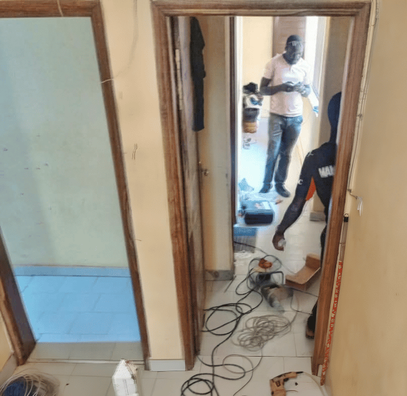

Déploiement de la connectivité Internet par satellite Starlink pour les résidences étudiantes du CROUS SINE SALOUM
Sous ma coordination stratégique, le support technique a procédé à l'installation et à la configuration d’une solution de connectivité Internet par satellite Starlink pour les résidences étudiantes du Sine-Saloum, dans le cadre d’un projet pilote visant à améliorer l’accès à Internet pour les étudiants.